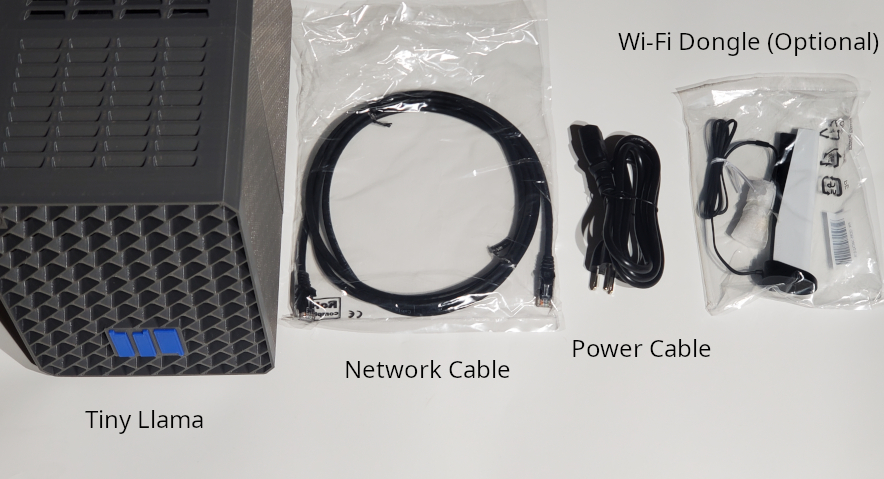
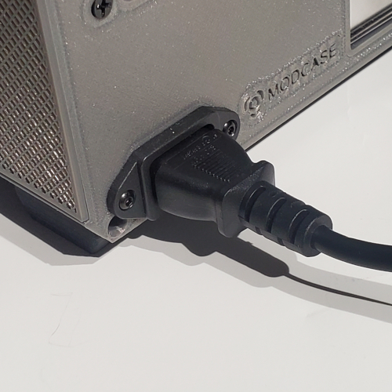
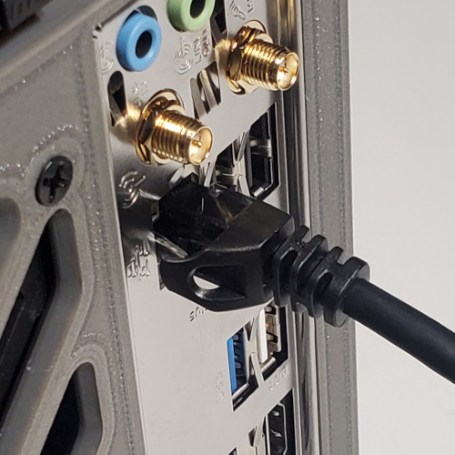
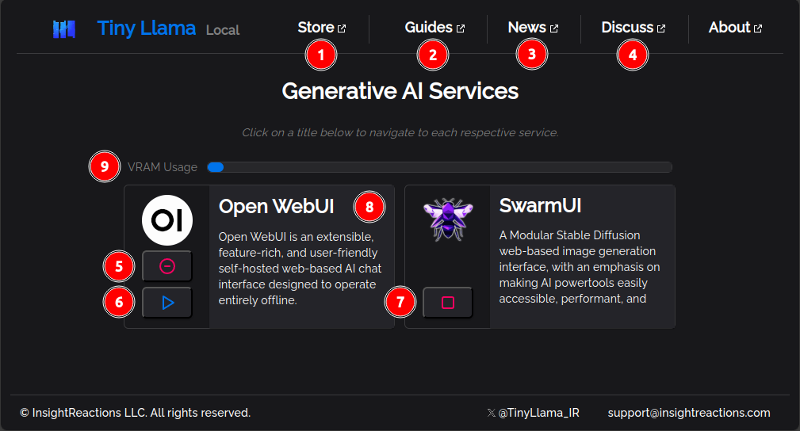

Remove all components from the packaging. The packaging should contain the following (Figure 1):
1x Tiny Llama AI Home Server
1x Power Cable
1x Network Cable
1x Wi-Fi Dongle (optional)

Visually inspect the components for damage. Verify there are no cracks or major structural
defects on the Tiny Llama AI Home Server. The Power Cable and Network Cable should not have any
exposed wiring.
Hardware Installation
The Tiny Llama AI Home Server should be placed in a well-ventilated location, near a power outlet and
network port.
Connect the power cable to the Tiny Llama AI Home Server (Figure 2).

Connect the network cable to the Tiny Llama AI Home Server (Figure 3).

Connect the corresponding ends of both cables to a power outlet and network port.
Powering On and Connecting
Press the power button on the front of the Tiny Llama AI Home Server. Internal lights should
illuminate, indicating power to the server. Please wait a few moments for the server to boot.
Open a web browser of your choice on a device (desktop computer, laptop, or phone) and type
tinyllama.local in the URL
bar and press Enter to access
the Tiny Llama Local Dashboard. Feel free to bookmark this address; it is the primary method of
accessing the tools offered by Tiny Llama.
Exploring the Tiny Llama Local Dashboard
Upon your first visit to tinyllama.local dashboard, you'll be greeted by an "Announcements and
Updates"
window. This window provides important information about new features and updates. It will only
appear once, and then reappear when there are updates. Click or tap "Close" to dismiss this window.
The Tiny Llama Local Dashboard serves as the central hub for all the tools and services offered by
Tiny Llama:

Following the guidance in the image above:
Visit the InsightReactions Store
View comprehensive guides for Tiny Llama and third-party AI Plugins on the Tiny Llama Local
Dashboard
Discover the latest news for the Tiny Llama product line.
Visit GitHub to discuss Tiny Llama with other users and the InsightReaction team.
This is the add/remove button for an AI Plugin. When the AI Plugin is installed, it will appear
as a encircled minus sign, signifying the "uninstall" action. When it appears as an encircled
plus sign, the action signifies the "install" action.
The start/stop button for an AI Plugin. When the button shows the "play" symbol, the AI Plugin
service is in the "stopped" state, and can be started.
When the button shows a "Stop" symbol, the AI Plugin service is in the "active" state, and can
be stopped.
Click on an AI Plugin title to navigate to each respective service.
View the amount of used Video Random-Access Nemory (VRAM) out of the total amount available.
This value is updated once per second and is a useful proxy for total system utilization.
Available AI Plugins
Open WebUI: This is an extensible, feature-rich, and user-friendly self-hosted
web-based AI chat interface designed for offline operation. It supports various LLM runners,
including Ollama and OpenAI-compatible APIs.
SwarmUI: This is a modular Stable Diffusion web-based image generation
interface that emphasizes making AI power tools easily accessible, performant, and extensible.
Plus many more to come! InsightReactions is dedicated to bringing you the latest in Generative AI
technologies. Our offerings will expand over time at no cost to our Tiny Llama users.